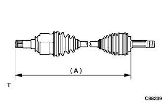

ジョイント部を上下、左右、軸方向に動かした際、スムースに作動し、著しいガタがない事を点検する。
ジョイントブーツの亀裂、損傷およびグリース漏れがないことを点検する。
- ■ 注 意 ■
- ドライブシャフトＡＳＳＹは水平にした状態で持ち運ぶ。
|  |
フロントドライブシャフトが下記の寸法になっていることを確認する。
- □ 参 考 □
| エンジン | アウトボード径 | LH | ＲＨ |
|---|---|---|---|
| 1NZ | - | 574.3±5ｍｍ | 813.3±5ｍｍ |
| 2NZ | 外径78ｍｍ | 572.3±5ｍｍ | 813.3±5ｍｍ |
| 2NZ | 外径85ｍｍ | 574.3±5ｍｍ | 813.3±5ｍｍ |
 |
ノギスを使用して、アウトボードジョイントの外径を測定する。(エンジン形式2NZ-FE)
- ■ 注 意 ■
- アウトボードジョイントの外径により、ブーツのグリース量などが異なるため必ず測定する。
- □ 参 考 □
- アウトボードジョイントの外径は、約78ｍｍと約85ｍｍの2種類がある。